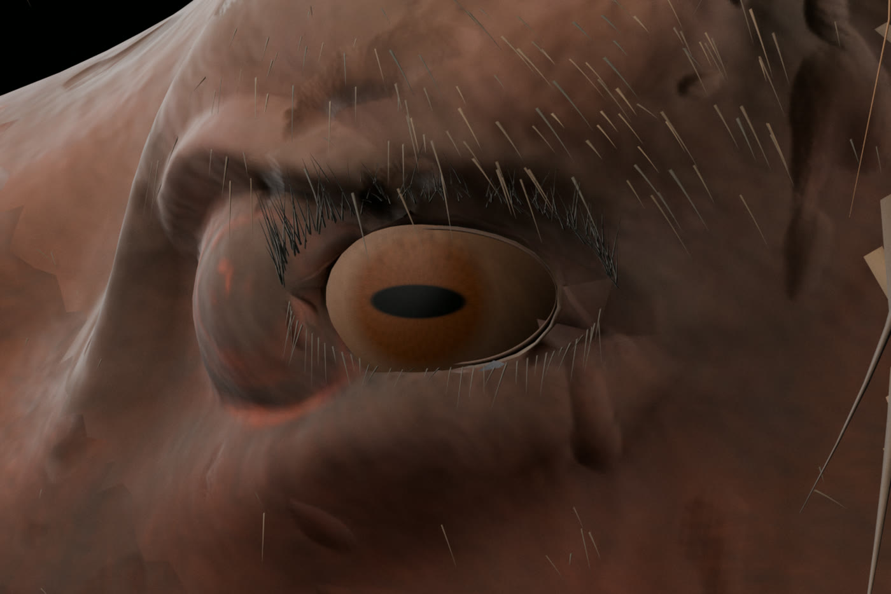
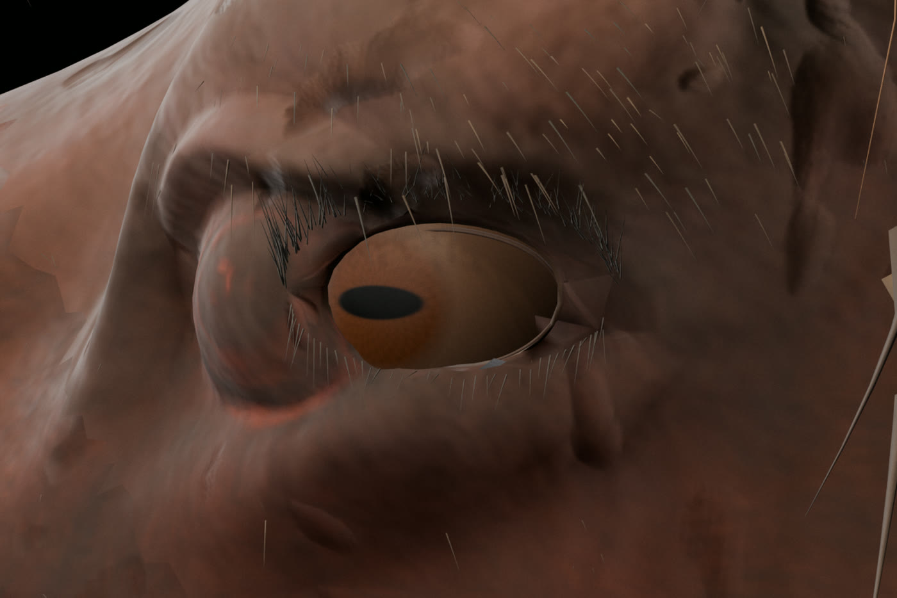
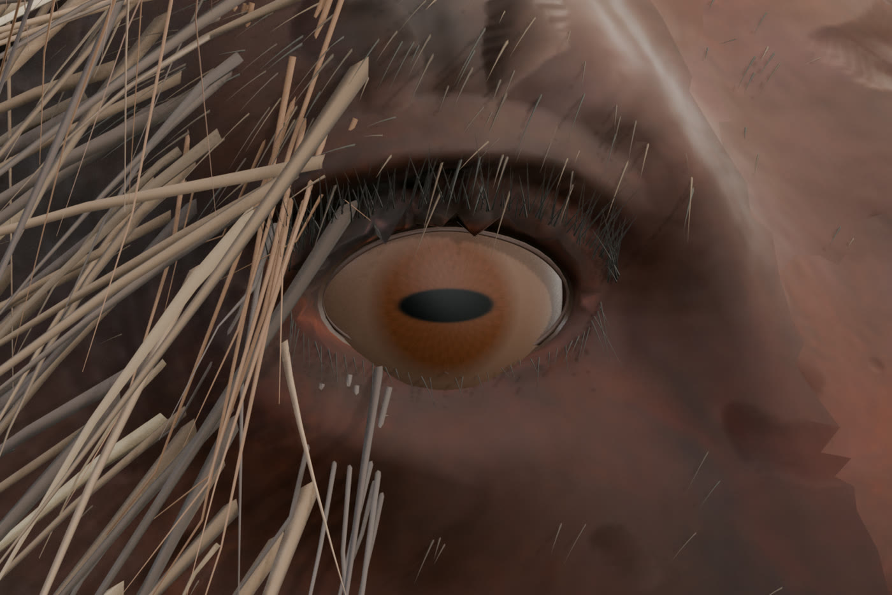
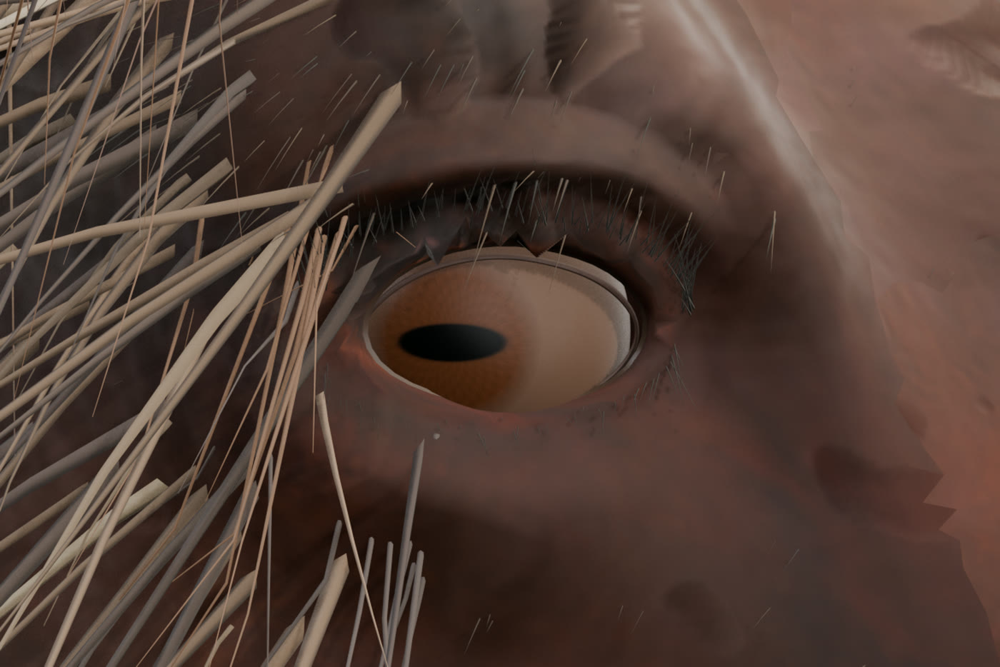
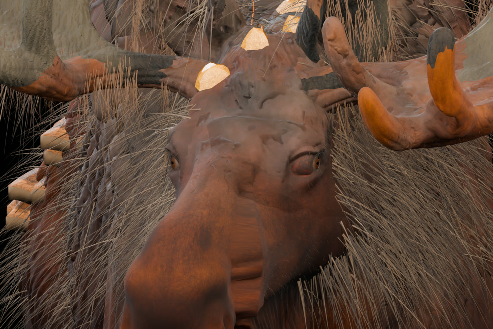
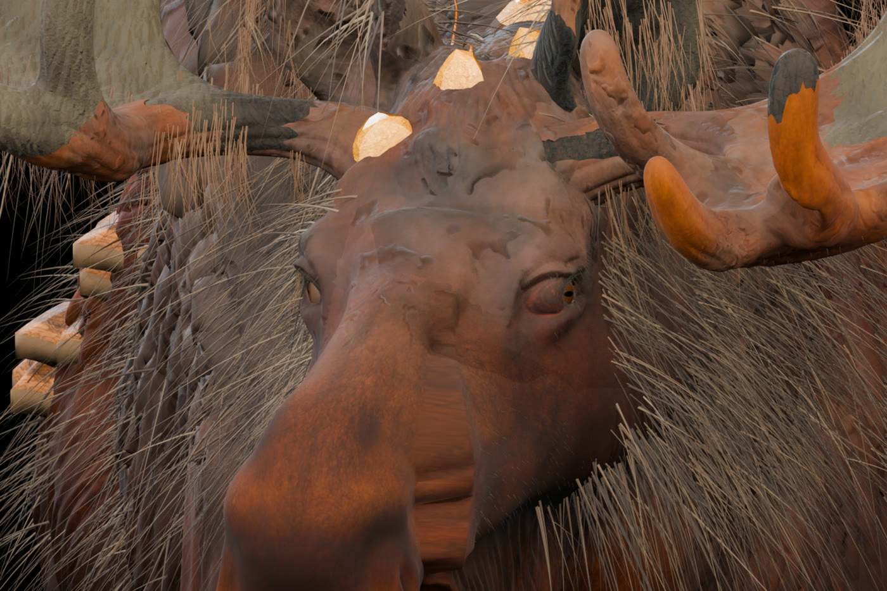

Лось V32J — исправление глазниц и глаз
Это кадры настоящей модели в Blender, не нейросетевой концепт. Исходные глаза V32E выступали из глазниц, а радужки выглядели слишком крупными. В V32J изменены размер и глубина посадки обоих сферических глаз, материал радужки и склеры, UV-развёртка век и несколько острых полигонов по краям глазниц. Голову и шерсть сохранили.
ЛЕВЫЙ ГЛАЗПРАВЫЙ ГЛАЗ
Видео собрано из 40 настоящих рендеров Blender. Игровая анимация: 60 кадров, 24 FPS, 2,5 секунды. Вращаются глазные яблоки; глазницы неподвижны.
Геометрия2 замкнутые сферы, 10 114 вершин каждая, 0 открытых рёбер
Текстура и глазницы4K PBR радужка, тёмная склера, более глубокая посадка, исправлена UV-развёртка век
Игровая анимация
EYES_LOOK_STRAIGHT_LEFT_LOOP и 2 прежних клипа в GLBСравнение V32E → V32J

Глаз сильнее выступает, радужка занимает больше видимой поверхности

Сфера посажена глубже, глаз уменьшен, край века подправлен
Оба глаза: прямо и влево
Нажмите на изображение, чтобы увеличить именно Blender-рендер.



Морда спереди

